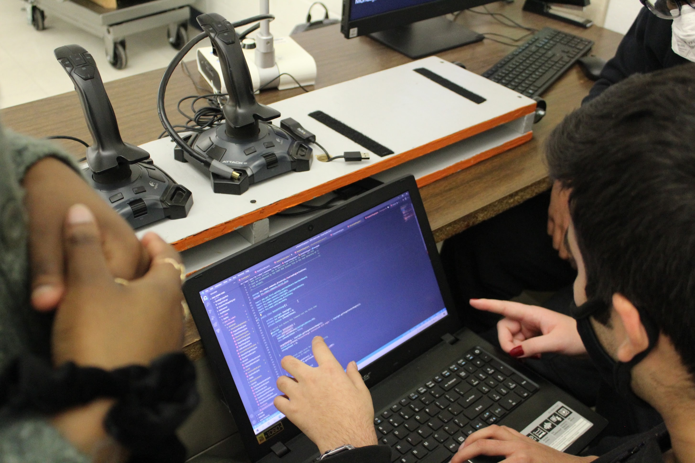

Capital One
Working under IFX Finance Tech to optimize the data engineering pipeline. Accelerating Apache Spark–based ETL workflows across AWS Glue, EMR, Databricks, and the Enterprise Modeling Platform
Relm AI
Developed LangChain LLM agents to aid in real estate property search. Deployed custom Redis Docker containers to AWS ECR and Lambda to process 2M+ records and improved analysis accuracy by over 98%. Accepted return offer for co-op position.

New Jersey Institute of Technology (Honors Summer Research Institute)
Conducted a paid research project on NJIT's study abroad program. Built an LLM-RAG algorithm and dashboard to present findings to 400+ faculty and scholars.

George Mason University (Developer Experience Design Lab)
Co-authored research paper: "Exploring the applications of Microtask Programming through the first ever Microtask Programming Hackathon." Optimized JavaScript endpoints performance through rigorous testing, achieving a 95% decrease in runtime errors.

I'm passionate about software engineering and data science, with experience across finance, AI, and research. I love tackling complex problems and building solutions that make a real impact.
Looking forward to my next opportunity to learn and grow!